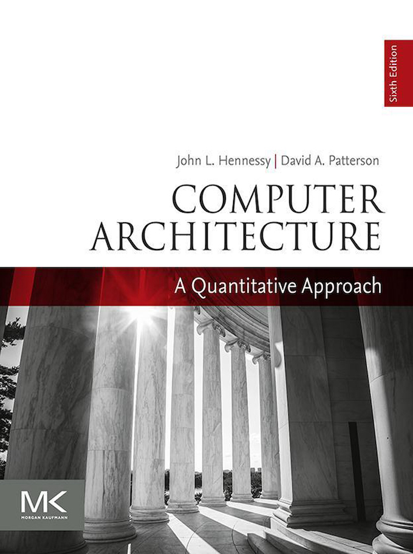
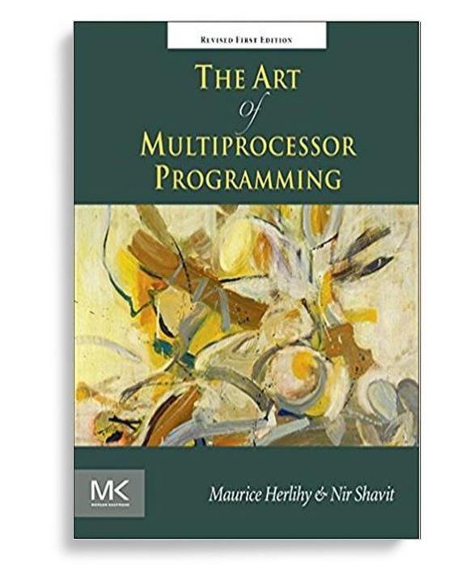

背景
上次课重新理解了 “操作系统上的程序”
- 程序 = 状态机
- 两种指令：计算和系统调用
但今天的 CPU 都是多处理器的
- 服务器: AMD EPYC 7702 (64C/128T)
- PC: Intel i7-10700 (8C/16T)
- 手机: Apple A12Z (4 Big + 4 Small)
如何写程序能利用好多处理器？
- 10$\times$ 性能提升可不是个小数字
本次课内容与目标
学会编写简单的多线程并发程序
- threads.h
正确认识到 “并发编程” 的可怕
- 多处理器编程：原子性、顺序、可见性的丧失
多处理器编程：入门
Three Easy Pieces: 并发
Concurrent: existing, happening, or done at the same time.
In computer science, concurrency refers to the ability of different parts or units of a program, algorithm, or problem to be executed out-of-order or in partial order, without affecting the final outcome. (Wikipedia)
为什么在这门课 (先) 讲并发？
- 讲并发
- 操作系统是最早的并发程序之一
- 先讲并发
- 好做实验 (L1: 多处理器 bare-metal 上的
malloc/free)- 警告：难度剧增
- 好做实验 (L1: 多处理器 bare-metal 上的
并发的基本单位：线程
共享内存的执行流
- 简单理解：“同时执行” 的函数
int x;
void thread_entry() {
printf("Thread %d\n", x++);
}
Thread 1
Thread 2
Thread 0
...
多线程 API (POSIX Threads)
POSIX 为我们提供了线程库 (pthreads)
- 使用
pthread_create创建并运行线程 - 使用
pthread_join等待某个线程结束 man 7 pthreads
线程
- 线程间共享
- 完整的地址空间 (所有数据，包括代码)
所有指令取指、执行都作用在同一个地址空间
- 线程独立拥有
- 寄存器 (为什么？)
- 堆栈 (地址空间都共享了，堆栈如何独立？)
threads.h: Simplified Thread APIs
操作系统课封装了线程 API (threads.h)
create(fn)- 创建并运行一个线程，该线程立即开始执行函数
fn - 函数原型
void fn(int tid) { ... } tid是从 1 开始编号
- 创建并运行一个线程，该线程立即开始执行函数
join(fn)- 等待所有线程执行结束
- 执行函数
fn - 只能 join 一次
多处理器编程：入门
#include 利用 threads.h 就可以写出利用多处理器的程序！
- 操作系统会自动把线程放置在不同的处理器上
- 在后台运行，可以看到 CPU 使用率超过了 100%
“共享内存” 的含义 (1)
- 代码最终会编译成
指令 - 通过指令访问的内存都是同一个
多线程程序的状态机模型
- $(M, R) \to (M, R_1, R_2, \ldots, R_n)$
- 独立堆栈通过为每个线程分配不同的 rsp 寄存器实现
- 在单处理器 CPU 上
- 某个线程执行一条指令
- 在多处理器 CPU 上
- “同时” 执行多个线程 → 万恶之源
可怕的事情在悄悄发生……
线程共享代码、数据，拥有独立堆栈
int x;
void thread_func() {
int y; // 通常 &y 不会被传递给其他线程
x++; // 其他线程直接可见
}
多处理器系统中线程的代码可能
- 两个线程同时执行
x++，结果会是什么呢？- 想一想如果是用多线程实现的 “多处理器” NEMU？
多处理器编程：放弃 (1) 原子性
例子：山寨多线程支付宝
int pay(int t) {
if (balance >= t) {
balance -= t;
return SUCCESS;
} else {
return FAIL;
}
}
并发执行 pay(100) 会发生什么 (balance == 100)？
- 如果
balance是unsigned，会发生更严重的后果- 账户里会多出用不完的钱！
- 即便钱足够，
balance -= t也非常危险- 即便一条 sub 指令，硬件也会分成 load 和 store
另一个例子：求和
分两个线程，计算 $1+1+1+\ldots+1$ (共计 $2n$ 个 $1$)
#define n 100000000
long sum = 0;
void do_sum() { for (int i = 0; i < n; i++) sum++; }
void print() { printf("sum = %ld\n", sum); }
int main() {
create(do_sum);
create(do_sum);
join(print);
}
结果
- 113863902
原子性的丧失
单线程程序状态机模型中 “程序一直执行” 的基本假设在多线程环境下不再成立。
原子性：pay()) 不被干扰
- 单处理器多线程
- 线程在运行时可能被中断，切换到另一个线程执行
- 多处理器多线程
- 线程根本就是并行执行的
(历史) 1960s，大家争先在共享内存上实现原子性 (互斥)
- 但几乎所有的实现都是
错的 ，直到 Dekker's Algorithm，还只能保证两个线程的互斥
有没有感到后怕？
printf 还能在多线程程序里调用吗？
void thread1() { while (1) { printf("a"); } }
void thread2() { while (1) { printf("b"); } }
我们都知道 printf 是有缓冲区的
- 为什么？
- 如果执行
buf[pos++] = ch(pos共享) 不就 💥 了吗？
RTFM!
多处理器编程：放弃 (2) 顺序
求和的例子再次出现
分两个线程，计算 $1+1+1+\ldots+1$ (共计 $2n$ 个 $1$)
#define n 100000000
long sum = 0;
void do_sum() { for (int i = 0; i < n; i++) sum++; }
void print() { printf("sum = %ld\n", sum); }
int main() {
create(do_sum);
create(do_sum);
join(print);
}
开启编译优化
-O1: 100000000 (???????)-O2: 200000000
顺序的丧失
编译器对程序的改写 (涉及内存访问指令的移动或删除) 仅对单线程执行有正确性保证。
编译器保证对任意执行
- 程序外部 (如系统调用) 使用内存时，被用到的内存数值和不优化 (
-O0) 时一致- 允许在 $x \ne y$ 时交换 store($x$), load($y$)
- 允许在 store($x$) 在未来一定被覆盖时删除这次写
试一试
for (int i = 0; i < n; i++) sum++;
多处理器编程：放弃 (3) 可见性
今天最可怕的例子……
int x = 0, y = 0;
void thread_1() {
x = 1; printf("y = %d\n", y);
}
void thread_2() {
y = 1; printf("x = %d\n", x);
}
实验结果 (4 x Xeon X7460, 24-cores)
| 打印的 x | 打印的 y | 概率 |
|---|---|---|
| 0 | 0 | 0.2% (难以接受这个设定啊) |
| 0 | 1 | 82.3% |
| 1 | 0 | 17.5% |
| 1 | 1 | 0.0% |
放弃的理由：处理器间可见性的丧失
为了使 CPU 运行得更快，CPU 可以
movl $1, (x) # x = 1, cache miss
# 如果等这条指令执行完，会浪费大量时间
movl (y), %eax # CPU 会立即执行这条指令
# (此时 y = 0)
...

现代处理器 (动态数据流分析)：
- 如果两条指令没有数据依赖关系，就让它们并行执行好了！
- 乱序执行 (out-of-order)
- 多处理器上执行的结果可以不等价于指令按照某个顺序执行的结果
- Further reading
多处理器编程：从入门到放弃
代码的执行比我们想象的复杂
在现代计算机系统上，即便是一个简单的 x = 1 也会经历：
- 源代码 → 二进制
- 编译器优化 →
顺序的丧失 - 编译器调整内存访问指令的顺序
- 编译器优化 →
- 二进制 → 处理器执行
- 中断/并行 →
原子性的丧失 - 原子性被破坏
- 多处理器乱序执行 →
可见性的丧失 - 指令的结果不能立即对其他处理器可见
- 中断/并行 →
保证顺序
阻止编译器优化变量读写
void delay() {
for (volatile int i = 0; i < DELAY_COUNT; i++) ;
}
在局部制止编译器调整指令顺序
#define barrier() asm volatile ("":::"memory")
void foo() {
extern int x, y;
x++;
barrier(); // ============================
x++; // 阻止 x 的访问被合并
y++; // y 的访问不能被移到 barrier 之前
}
保证原子性
本学期的重要主题：互斥 (mutual exclusion)
stop_the_world();
... // critical section, 临界区
resume_the_world();
临界区管理
- 执行
stop_the_world()之后，整个系统中所有的其他线程都暂停 - 执行
resume_the_world()后，系统中其他线程才恢复 - 这样就可以保证我们安静地完成
pay()或者sum++了
保证可见性
本学期基本不涉及
- 会介绍一个简化但够用的模型 (简化自 C11 Memory Model)
保证可见性：需要硬件支持
- 内存模型
- Total Store Order (TSO); Partial Store Order (PSO); ...
- 内存 “路障” 指令
- fences (lfence, sfence, mfence, ...)
- 原子指令
- x86-family: lock prefix (
lock xchg, ...) - riscv/mips: load-reservation/store-conditional (mip)
- x86-family: lock prefix (
总结
总结
本次课内容与目标
- 学会编写简单的多线程并发程序 (
threads.h) - 正确认识到 “并发编程” 的可怕 (原子性、顺序、可见性的丧失)
- 这是一门 system 课程，因此不讲并发理论和算法
Take-away message
- 不要自作主张写 “聪明” 的并发程序
- W. Xiong, et al. Ad hoc synchronization considered harmful. In Proceedings of OSDI, 2010.
- 老老实实使用久经考验的 API
- 写出读得懂、说明得了正确性的代码
喜欢并发？
并发算法是非常有趣 (很难) 的研究问题！
- 理论计算机科学和分布式计算领域有非常多有趣的结论

《并发算法与理论》 (秋季学期开课)
- 主讲：梁红瑾
- 研究方向：并发算法的正确性证明
- SIGPLAN Distinguished Paper Award Winner (PLDI'19)
- 使用右边这本世界上最好的并发教科书
- Gödel Prize Winner